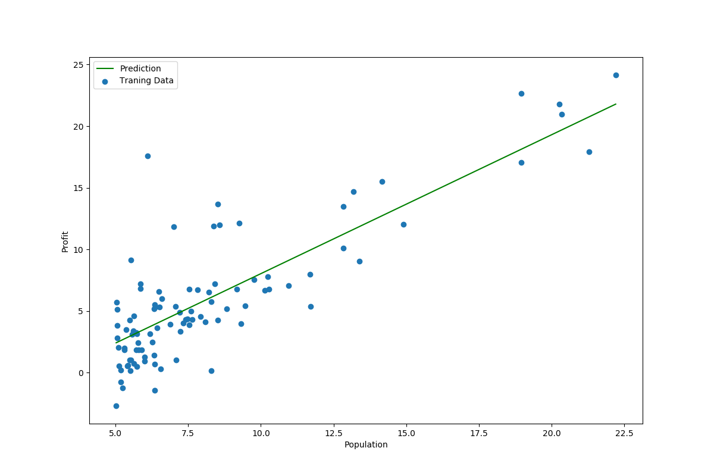
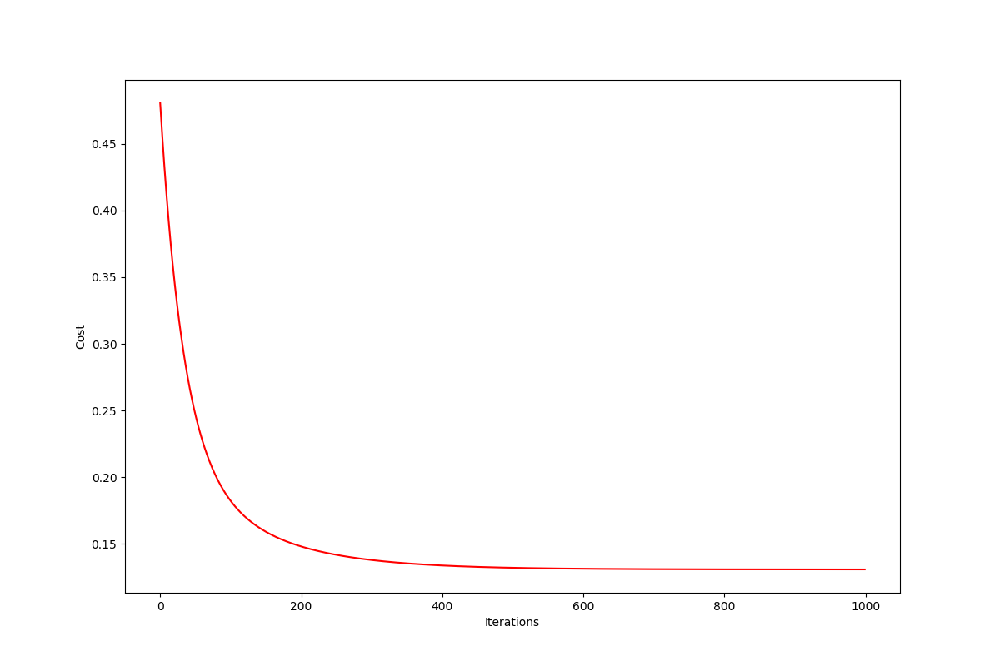

AndrewNg 机器学习习题ex1-linear regression
练习用数据
练习数据ex1data1.txt和ex2data2.txt都是以逗号为分割符的文本文件，所以我们也可以把它们看作csv文件处理。
ex1data1中的第一列是一个城市的人口，第二列是这个城市中卡车司机的利润。
ex2data2三列分别是，一个房子的大小，房间数，售价。
浏览数据
1 | import numpy as np |
| - | Population | Profit |
|---|---|---|
| 0 | 6.1101 | 17.5920 |
| 1 | 5.5277 | 9.1302 |
| 2 | 8.5186 | 13.6620 |
| 3 | 7.0032 | 11.8540 |
| 4 | 5.8598 | 6.8233 |
| - | Population | Profit |
|---|---|---|
| count | 97.000000 | 97.000000 |
| mean | 8.159800 | 5.839135 |
| std | 3.869884 | 5.510262 |
| min | 5.026900 | -2.680700 |
| 25% | 5.707700 | 1.986900 |
| 50% | 6.589400 | 4.562300 |
| 75% | 8.578100 | 7.046700 |
| max | 22.203000 | 24.147000 |
代价函数
我们将创建一个以参数θ为特征函数的代价函数
$J\left( \theta \right)=\frac{1}{2m}\sum\limits_{i=1}^{m}{{{\left( {{h}_{\theta }}\left( {{x}^{(i)}} \right)-{{y}^{(i)}} \right)}^{2}}}$其中：
${{h}{\theta }}\left( x \right)={{\theta }^{T}}X={{\theta }{0}}{{x}{0}}+{{\theta }{1}}{{x}{1}}+{{\theta }{2}}{{x}{2}}+...+{{\theta }{n}}{{x}_{n}}$1 | def compute_cost(X, y, theta): |
预处理
1 | # 预处理 |
批量梯度下降
我们要这个公式来更新θ。
${\theta_{j}}:={\theta_{j}}-\alpha \frac{\partial }{\partial {\theta_{j}}}J\left(\theta \right)$1 | # 梯度下降 |
可视化
1 | # 绘制线性模型以及数据，查看拟合效果 |

1 | # 绘制代价向量 |
多变量的线性回归
练习1还包括一个房屋价格数据集，其中有2个变量（房子的大小，卧室的数量）和目标（房子的价格）。 我们使用我们已经应用的技术来分析数据集。
1 | path = './data/ex1data2.txt' |
| - | Size | Bedrooms | Price |
|---|---|---|---|
| 0 | 2104 | 3 | 399900 |
| 1 | 1600 | 3 | 329900 |
| 2 | 2400 | 3 | 369000 |
| 3 | 1416 | 2 | 232000 |
| 4 | 3000 | 4 | 539900 |

正规方程
$\theta ={{\left( {X^T}X \right)}^{-1}}{X^{T}}y$1 | # 正规方程 |